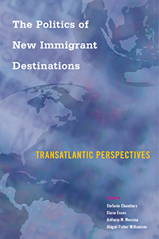

<body bgcolor="#FFFFFF" text="#000000" link="#0000FF" vlink="#CC0000" alink="#CC0000"><center><hr width="350" size="1" align="center" noshade>Examining the challenges posed by the proliferation of cultural, ethnic, and/or religious diversity in new destinations for immigrants in Europe and the United States<hr width="350" size="1" align="center" noshade><p><a href="https://cdcshoppingcart.uchicago.edu/Cart/ChicagoBook.aspx?ISBN=&&PRESS=temple" target="_top">Buy this book!</a> | <a href="https://cdcshoppingcart.uchicago.edu/Cart/Cart.aspx?PRESS=temple" target="_top">View Cart</a> | <a href="https://cdcshoppingcart.uchicago.edu/Cart/Cart.aspx?PRESS=temple" target="_top">Check Out</a></p><p></p></center><!--none//--><h1 class = "booktitle">The Politics of New Immigrant Destinations</h1> <h1 class = "subtitle">Transatlantic Perspectives</h1>
<h3>Edited by Stefanie Chambers, Diana Evans, Anthony M. Messina, and Abigail Fisher Williamson</h3>
paper: $39.95, Jul 17<BR>EAN:&nbsp;978-1-4399-1463-2<BR><font color=#990033>Not Yet Published Preorder</FONT><font size=-7><br>&nbsp;</font></p><p class="info">cloth: $99.50, <BR>EAN:&nbsp;978-1-4399-1462-5<BR><font color=#990033>Not Yet Published Preorder</FONT><font size=-7><br>&nbsp;</font></p><p class="info">e-book: $39.95, <BR>EAN:&nbsp;978-1-4399-1464-9<BR><font color=#990033>Not Yet Published Preorder</FONT><font size=-7><br>&nbsp;</font></p></p></td></tr></table>
<BR> <p class="info">348 pp<BR> 6 x 9<BR> 43 tables, 14 line drawings, 2 maps <p class="info"><font size=-7>&nbsp;</font></p><p class="info">
</P><BLOCKQUOTE></BLOCKQUOTE>
<p>
Migration to new destinations in Europe and the United States has expanded dramatically over the past few decades. Within these destinations, there is a corresponding greater variety of ethnic, cultural, and/or religious diversity. This timely volume, <i>The Politics of New Immigrant Destinations, </i>considers the challenges posed by this proliferation of diversity for governments, majority populations, and immigrants.
<br />The contributors assess the effectiveness of the policy and political responses that have been spawned by increasing diversity in four types of new immigrant destinations: "intermediate" destination countries-Ireland and Italy; culturally distinct regions experiencing new migration such as Catalonia in Spain or the American South; new destinations within traditional destination countries like the state of Utah and rural towns in England; and "early migration cycle" countries including Latvia and Poland.
<br /><i>The Politics of New Immigrant Destinations</i> examines how these new destinations for immigrants compare to traditional destinations, with respect to their policy responses and success at integrating immigrants, offering perspectives from both immigrants and natives.<br>
<p><i>Contributors include: Dace Akule, Amado&nbsp;Alarcñn, Rhys Andrews, Francesca Campomori, Tiziana Caponio, Scott Decker, Erica Dobbs, Melissa M. Goldsmith, Aleksandra Grzyma&#322;a-Kaz&#322;owska, Claudio A. Holzner, Magdalena Lesi&#324;ska, Paul Lewis, Helen B. Marrow, Laura Morales, Katia Pilati, Marie Provine, Monica Varsanyi, and the editors.</i>
<br>
<P CLASS="top"><A HREF="#top">BACK TO TOP</A></P>&nbsp;
<BR>&nbsp;
&nbsp;<P>
</P><BR>&nbsp;
<H2 class="inpageheading"><A NAME="author bio"></a>About the Author(s)</H2><p>
<b>Stefanie Chambers</b> is Charles A. Dana Research Associate Professor of Political Science at Trinity College in Hartford, Connecticut. She is the author of <i>Mayors and Schools: Minority Voices and Democratic Tensions in Urban Education</i> and <i>Somalis in Twin Cities and Columbus: Immigrant Incorporation in New Destinations</i> (both Temple).
<br>
<p>
<b>Diana Evans</b> is a Professor of Political Science at Trinity College in Hartford, Connecticut. She is the author of <i>Greasing the Wheels: Using Pork Barrel Projects to Build Majority Coalitions in Congress</i>.
<br>
<p>
<b>Anthony M. Messina</b> is John R. Reitemeyer Professor of Political Science at Trinity College in Hartford, Connecticut. He is the author of <i>Race and Party Competition in Britain </i>and<i> The Logics</i> <i>and</i> <i>Politics of Post-WWII Migration to Western Europe</i> and the editor or co-editor of five volumes.
<br>
<p>
<b>Abigail Fisher Williamson </b>is Assistant Professor of Political Science and Public Policy and Law at Trinity College in Hartford, Connecticut.
<br>
<P CLASS="top"><A HREF="#top">BACK TO TOP</A></P>
<p><h2 class="inpageheading"><A NAME="subjects"></a>Subject Categories</h2><P><A HREF="/tempress/geography.html" TARGET="_top">Geography</a><BR><P><A HREF="/tempress/immigration.html" TARGET="_top">Immigration</a><BR><P><A HREF="/tempress/political.html" TARGET="_top">Political Science and Public Policy</a><BR><P><A HREF="/tempress/race.html" TARGET="_top">Race and Ethnicity</a></P></P></P>
</p>
<P>
</P>
<p align="center"><a href="https://cdcshoppingcart.uchicago.edu/Cart/ChicagoBook.aspx?ISBN=&&PRESS=temple" target="_top">Buy this book!</a> | <a href="https://cdcshoppingcart.uchicago.edu/Cart/Cart.aspx?PRESS=temple" target="_top">View Cart</a> | <a href="https://cdcshoppingcart.uchicago.edu/Cart/Cart.aspx?PRESS=temple" target="_top">Check Out</a></p><p><font face="Arial" size="1"><a href="copyright.html" onMouseOver="window.status='Web Copyright Policy';return true;" onMouseOut="window.status=''" title="Web Copyright Policy">&copy;</a> 2017 <a href="http://www.temple.edu" target="new" onMouseOver="window.status='Link to Temple University home page';return true;" onMouseOut="window.status=''" title="Link to Temple University home page">Temple University</a>. All Rights Reserved. http://www.temple.edu/tempress/titles/2444_reg.html</font></p>